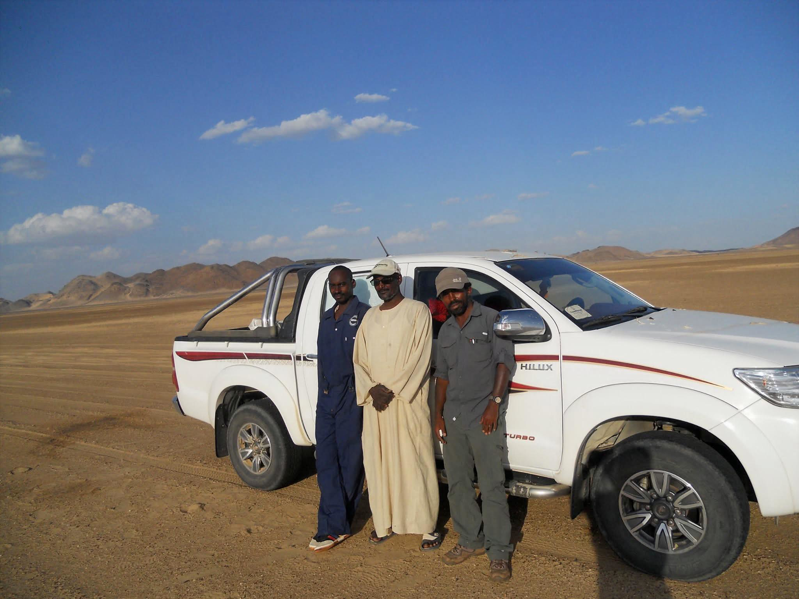

Exploration geology consultancy delivering technical project evaluation and methodical geospatial workflows to hit your discovery targets.

Ubuntu Geoscience delivers expert mineral exploration and geoscience consulting services focused on the Arabian-Nubian Shield, West Africa, and comparable frontier mineral terrains. By integrating field geology, multi-source geochemical and geophysical datasets, and methodical remote sensing workflows, the consultancy transforms complex data into actionable drill targets and scalable exploration programs.
Our hands-on experience spans orogenic gold, VMS, and porphyry copper systems. This includes key technical contributions to the Galat Sufur South gold discovery, as well as extensive target generation and project evaluation within the Bisha and Asmara VMS belts.
Geological investigations focused on structural controls, alteration assemblages, and pathfinder element distribution associated with mineralisation systems.
Integrated interpretation of geochemical, geophysical, remote sensing images, and structural datasets to generate drill-ready targets.
Comprehensive geospatial data management, prospectivity mapping, and exploration data integration for discovery-focused workflows.
Ubuntu Geoscience applies field-first exploration methodology grounded in geological observation and integrated interpretation. Work spans the Asmara Belt, Nubian Shield, Ariab and Bisha districts and frontier exploration corridors across Africa and the MENA region.
Ubuntu Geoscience supports mineral exploration projects through boots-on-ground field work and desktop workflows including geological mapping, remote sensing images analysis, legacy data reinterpretation, GIS integration, geochemical and geophysical data synthesis, drilling support, exploration targeting, and ASGM technical evaluation.